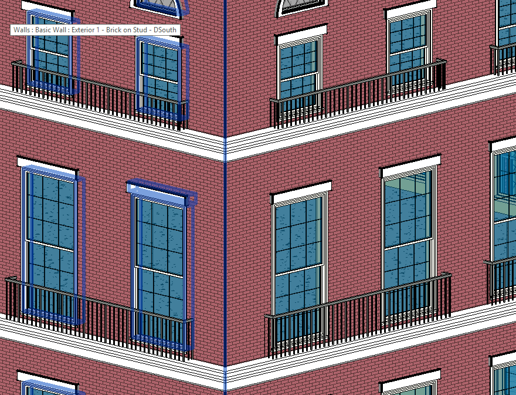
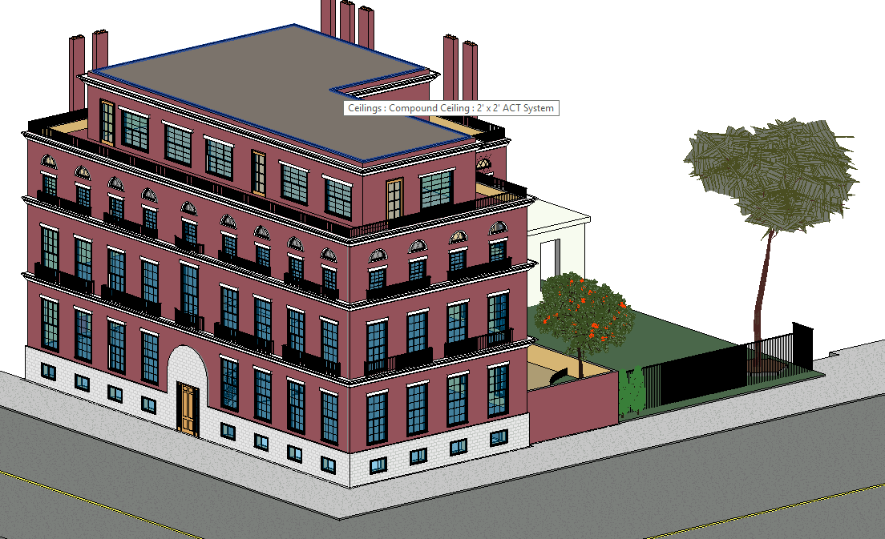
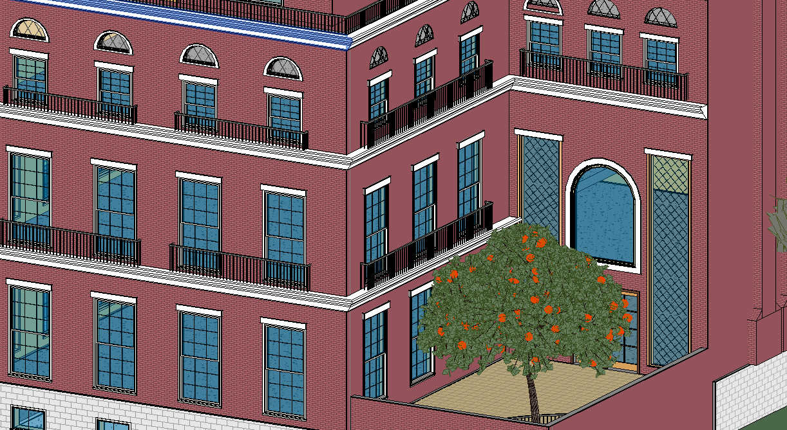
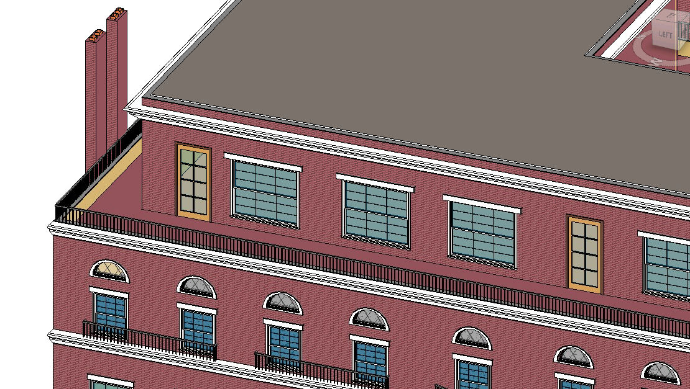

Architecture Materials Project
Inspired by the Knickerbocker Club building in at 2nd east 62nd street in NYC. Project was to demonstrate the use of various building materials and building elements. I used common red clay bricks (walls), CMU blocks (white @ low level), white clay (sweeps), and marble (fountain in yard). I used many features which were new to me including wall sweeps, railings, muntin patterns, slabs over windows, incorporating various wall types, environment detailing (like street + trees), and custom windows and doors.
This is the first project I've built totally from scratch, without any prepared floor plan, and the first where I focused on aesthetics more so than technical details, so I really enjoyed the creativity and novelty.
 
 